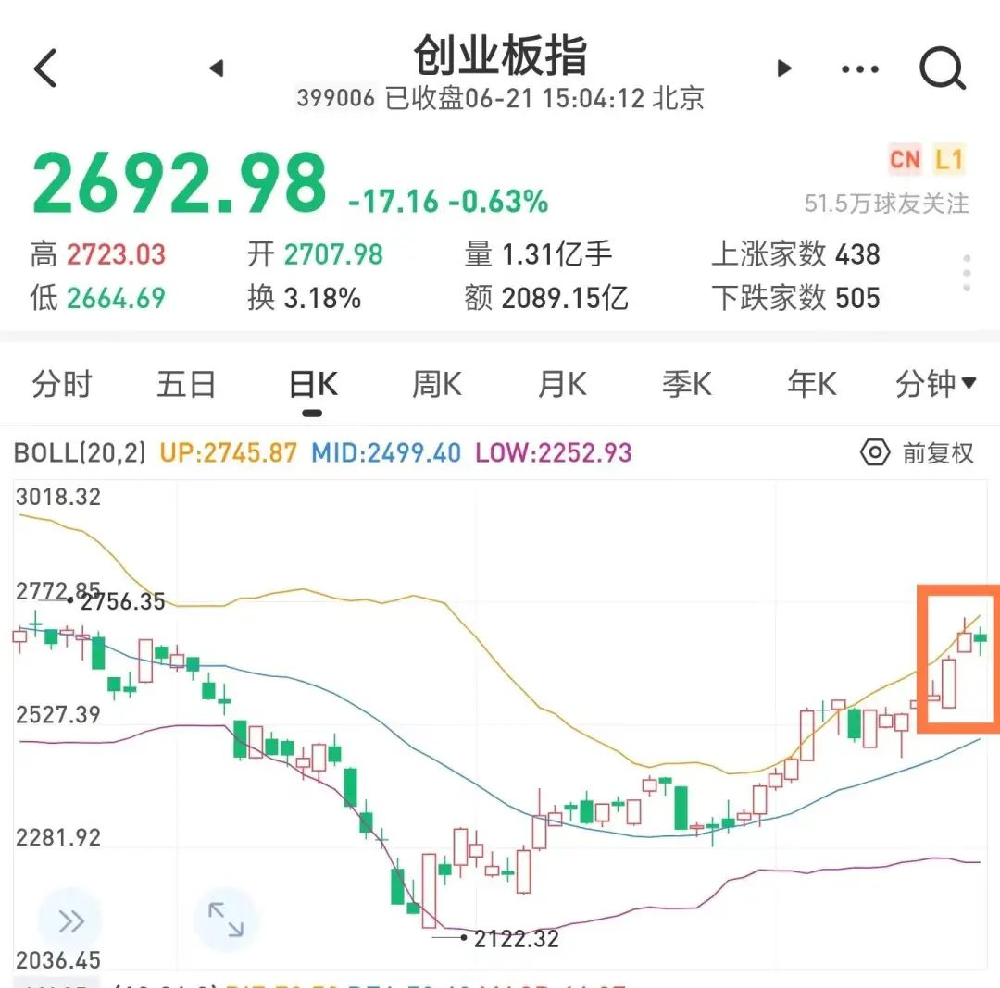
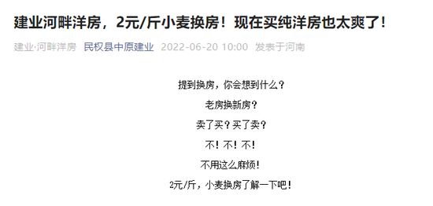
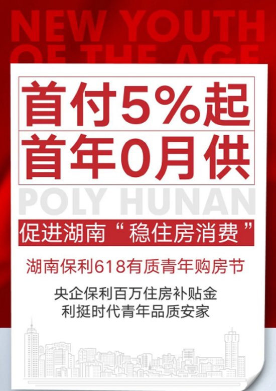
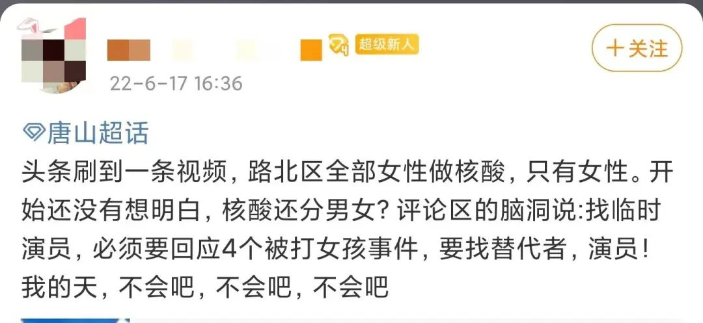
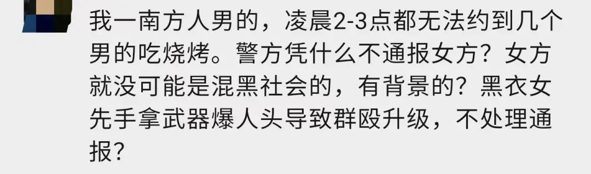

小麦大蒜抵首付。。。
原创 V姐万事屋 V姐来了 2022-06-21 23:12 发表于上海
原文链接(长) 原文链接(短)
Hi, 我是V姐。
最近的A股行情依然不错，今天三大股指微跌。
昨天创业板这里有一个跳空高开的缺口，近期大概率会回补。

近一个月的反弹，上证指数上涨了15%，创业板上涨了20%以上。今年大牛市的可能性很小，面对7.8月份大量业绩一般的中报，偏保守的投资者可以考虑适当止盈。
6月份最新数据，30城楼市销量环比增长不少，所以地产和家电板块节奏又起来了。我们前面也说过这个逻辑，地产3月之前是买预期，之后就要看实际地产情况是不是好转。
接下来家电也是确定性比较高的。像美的这样的龙头，近5年ROE为25%，净现比130%，全是现金利润，赚钱能力很强。合同负债265亿，在手订单相当充足。近1个月，公司回购8.3个亿。现在的股价只有21年最高点的一半多点。我个人觉得今年不要梭哈赛道股，新能源再好，基建相关还是压箱石。
本来我以为自己已经对楼市促销政策烂熟于心，无非限购限贷松绑，棚改放水降息。千算万算，没想到还能小麦大蒜换房。
今天看到河南两个县，为了卖房子，出了奇招。

楼盘销售人员表示活动20日刚开始，目前小麦市场价大约在1.5元/斤，他们是按2元/斤的价格给购房优惠。
所以是助农卖房两不误？
该楼盘成交均价在5300-6200元/㎡之间，首付价格最低在18.6万元左右，最高16万的小麦抵扣款，可以支付首付款的80%。
这个河南省开封市杞县更厉害了，5元/斤抵扣房款，5月22日-6月6日期间，这个楼盘获得来电咨询2859组、到访852组、成交30套，16天成交约86万斤大蒜。
。。。
这个套路很新颖，其实本质是变相降价。房子这个东西，大家买涨不买跌，你直接打折人家反而不买。现在假设小麦抵房款16万，收来再转手卖出麦子，卖12万，那就是亏4万。
等于变相降4万嘛。
对于农民来说，他本来也要去卖粮食，现在直接给开发商，首付现金压力小了，挺好。
农产品换房，本质是挖掘农民的购买力，帮助县城去库存。小地方房子，最怕就是烂尾，开发商已经帮你想到了，0首付，住进去再付钱。
6月15日，开封某楼盘推出“0压力0风险住进现房再交钱”的促销政策，具体为 **购房者交纳5万元钱即可以定房，首付款剩余的部分到了交房时再结清；在交房前，购房者不需要还月供。**
这不，只要有人带头，卷起来不在话下。湖南 **推出了5%首付，首年0月供** 的大招。湖南保利在长沙、常德、衡阳、岳阳、益阳等地的10个在售项目将同步参与该活动。

看来没有卖不出去的房子，只有没有到位的政策。
另外，今天看到唐山打人事件出了详细的公告。4个女孩，2个轻伤二级，现在普通病房，2个轻微伤未住院。轻伤其实不轻，司法鉴定里的轻伤，包括颅骨骨折，鼻骨粉碎性骨折等等伤害。希望两个住院女孩子早日康复。
通报的信息量很大，相关机构的规格也很高，案件是公安部亲自督导，异地警力查处；伤情鉴定是上海的司法鉴定科学研究院，是我国司法部直属的司局级单位，并非河北当地机构。
我认为不可能，也没有必要搞任何弄虚作假的事情。
我在案发初期一篇文章里为受害者发声，也呼吁严惩。后台收到大量留言，说女孩已经死了，还有说女孩们从事特殊行业，也是黑社会等等。
不否认大量关注，推动了案件从严从快进展，这是正义的力量。但是各类恶毒的谣言，也属实来路不善。
我们普通人，关心受害人，希望得到她们安好的消息，非常正常。但是P图，造谣去世，编轮J故事，P血腥视频，移花接木其他暴力视频，这个发心真的是关心受害者吗？
唐山超话里，有大量埋伏好的谣言。

如果受害者真的现身说话，他们会说，这是演员。
后续会大量给受害者泼脏水，网暴，直到出现他们想要的结果。普通朋友可能会朴素地觉得，怎么会网暴受害者？
你看烧烤店老板娘已经被网暴到关店了，天天收花圈，她又有什么错呢？
成都49中去世的孩子，他生前最后的足迹，仔细扒开，呈现给互联网一场悲哀的狂欢。
我看公众号后台的留言，就非常理解这几个普通姑娘，大概率不会想要出现在全国聚光灯下接受什么采访。

惩罚坏人，不是惩罚男人。善恶对立，何必男女对立。